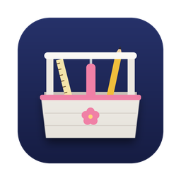
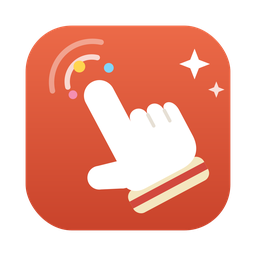

Reynold's Mac apps
Small, focused tools for the Mac. Download once, and each app keeps itself up to date.
-
Sukkiri すっきり“neat”
Copy from Google Docs, a web page or Word, and paste into email without the messy fonts, colors and highlights. Links, bullets and bold stay.
What's new
-

Benri 便利“handy”
A toolbox in Finder's right-click menu: convert, shrink, rename and tidy up files. Plus ShortClick, a ring of shortcuts that opens at your pointer.
What's new
-

Kocchi こっち“this way”
Turns your pointer into a hand that taps when you click, so people watching your shared screen can follow along.
What's new
How to install
- Download and open it.A window appears with the app on the left and your Applications folder on the right.
- Drag the app onto Applications.That's the whole install.
- Open it from Applications.These apps live in the menu bar at the top right of your screen, near the clock. A short guide shows you around the first time.
After that, each app updates itself. To check right away, click its icon near the clock and choose Check for Updates.